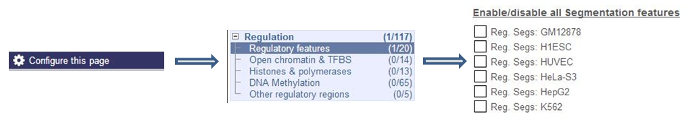

Segmentations partition the genome into regions such as predicted promoters, enhancers, and repressed (see table below). These are genomic regions of similar signal over a selected number of assays. Each defines a single-track summary of the functional architecture of the human genome in one of six cell types.
To build segmentations we currently use Segway (Hoffman et al., 2011) a dynamic Bayesian network algorithm using real-valued signal data, trained over the ENCODE pilot regions (1% of the genome), and fitted over the whole genome.
Currently there is one set of human segmentations, performed on Segway with a 200bp resolution. The assays were generated in the ENCODE and Roadmap Epigenomic projects for A549, DND-41, GM12878, K562, H1-hESC, HepG2, HeLa-S3, HSMM, HSMMtube, HUVEC, IMR90, Monocytes-CD14+, NH-A, NHDF-AD, NHEK, Nhlf and Osteoblasts, and were chosen to maximise information content about the state of the genome. These assays (including control input sequencing) were coordinated across all cell lines and constituted from three classes of data:
| Input Data Class | Description |
|---|---|
| Open chromatin | DNase1 hypersensitivity |
| Transcription factors | CTCF |
| Histone modifications | H3k4me1, H3k4me2, H3k4me3, H3k9ac, H3k27ac, H3k27me3, H3k36me3, H4k20me1 |
There is one segmentation track available for each of the cell types in the human Ensembl Regulatory Build. These tracks are on by default in most regulation views, but not in the Location tab. Once in the Location tab, you need to configure the page to turn on the Segmentation tracks as show below.
The colours used for each of the segmentation classes follows the agreed ENCODE standard (a legend is displayed at the bottom of any window displaying regulatory features).